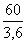
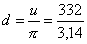
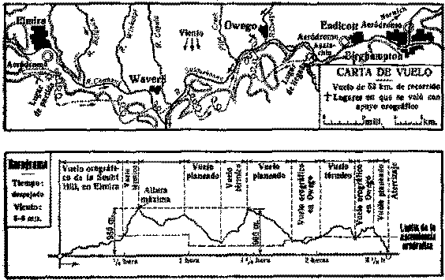
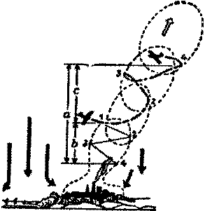
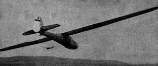
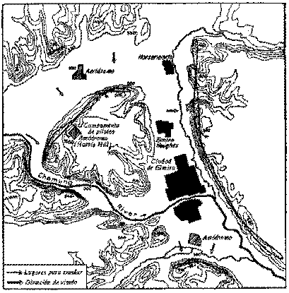

Manual del Vuelo a Vela
Wolf Hirth
1942
Técnica del vuelo térmico
por
WOLF HIRTH
« Térmica »
era antes, en los círculos de los pilotos activos de velero, una palabra mágica. Cuando
en 1926, Nehring voló a vela,
por primera vez, una hora con el térmico vespertino sobre la ladera norte de la Wasserkuppe, nadie
podía explicarse exactamente lo que había pasado. Aprovechar la « térmica solar »,
durante el día era, desde luego, cosa casual. En los vuelos de duración, con apoyo sobre
la ladera, se presentaba la coyuntura una vez a éste, otra a aquél, pero siempre por
sorpresa, y así pasaba muchas veces que el velero más sencillo volaba a más altura que
el mejor « cacharro ». El que volaba mucho tenía naturalmente más vista para conseguir
que le ayudase esa « chiripa térmica ». Como ejemplo, quiero citar dos casos que me
ocurrieron en mis vuelos, en los que tuve éxito, sin que, sin embargo, comprendiese su
« porqué » hasta después de dos años. 
En 1928,
di la vuelta al Eube con regreso
a la Wasserkuppe. Volar por
delante de la ladera sur de la Kuppe hacia el Eube (véase la
carta de la Fig. 145) era sencillo y muchos lo habían hecho. Estaba yo ante el Eube volando una
media hora con apoyo sobre la ladera, casi siempre a 50 m. de altura por encima de la
cúspide, cuando una « racha de viento » me subió a 120 m. y entonces pensé: ahora o
nunca, y me dirigí a través del Goldloch (el valle al
norte de la palabra « Eube »), tras de
la « racha de viento » y vi que lejos de perder altura subía todavía algo más,
llegando así a la ladera Pelzner (en el ángulo
sur del aeródromo), derechamente hacia su nacimiento y volé todavía un cierto tiempo
sobre la ladera sur. Lo que pasó en realidad es que me apoyé en una pompa térmica, si
bien no hice más que atravesarla en línea recta.
Una cosa
parecida me ocurrió en el vuelo del « Schweinsberg », en
1929. Estaba sobre el Milseburg, 10 Km. hacia
el Norte, para rodear el Schweinsberg; volé un
cuarto de hora en el camino de regreso a Milseburg, sin ganar
altura, tratando sin mucha esperanza de volver a la Kuppe. Ya veía a
ésta levantarse ante mi y estaba dispuesto a aterrizar abajo, cuando de repente noté que
allí en el centro del valle empezaba a subir lentamente, de modo que habría podido
alcanzar la segunda meseta de la Kuppe. Ahora ya no
me era difícil ganar algo de altura en la ascendencia de la ladera y eso me bastó para
aterrizar al pie de la ladera sur, empleando alguna marrullería, lo que fue suficiente
para ganar el premio según las condiciones del concurso. También esta vez, como lo
comprendí un año después, había ocurrido la casualidad de que atravesé una pompa
térmica en el momento oportuno y ella fue la que me elevó, mientras que normalmente
allí habría tenido descensión.
También
se sabía ya como cosa corriente, que en una ladera soleada era posible volar a vela con
viento débil de fuerza tan pequeña que sin sol no habría bastado para volar. Pero nadie
tenía clara idea de cómo se podía conocer dónde había térmica
y si ella sola
bastaba para volar, independientemente de la ascendencia orográfica.
En los
años 1928 y 1929 se hicieron vuelos que despertaron gran interés, con apoyo en las
fuertes ascendencias
térmicas bajo las nubes,
pero sin que todavía se emplease la técnica actual de virar.
A ello
contribuyeron, sin duda, las circunstancias de que por una parte muchos de los veleros que
entonces había no eran apropiados para la virada ceñida y de que, por otra, los pilotos
no se atrevían a virar en esa forma.
La razón
principal era, sin embargo, que todavía no se había dejado sentir la necesidad de virar
ceñido. Esta necesidad la sentí yo, desde luego, en los años 1929 y 1930, y
especialmente durante mi participación en el primer concurso americano de vuelo a vela
en Elmira (en el Estado
de Nueva York). Allí
llevaba yo, por primera vez en mi aparato, un variómetro que me sirvió para, en los
muchos vuelos que hice sobre la ladera, adquirir la idea de la forma e intensidad de las
ascendencias térmicas. Sobre el descubrimiento del variómetro para el vuelo a vela
dice Lippisch: « En 1918
estaba yo como técnico aerodinámico en la casa Dornier y al mismo
tiempo inspeccionaba los vuelos de ensayo de los tipos nuevos. Como no podíamos conseguir
las velocidades ascensionales previstas, lo que principalmente se debía a no pilotar bien
los aparatos, busqué un instrumento que midiese la velocidad ascensional y encontré uno
que me proporcionó el doctor Dornier, un
variómetro Atmos (aneroide),
que nos hizo un buen servicio proporcionándonos buenos barogramas de la subida de los
aparatos. Después, en 1928 le hice notar a Kronfeld la utilidad
que traería emplear un variómetro en los vuelos a vela térmicos, pero no pudimos
conseguir un Atmos, que ya no
existía en su antigua forma, así que nos quedamos sin variómetro. Entonces nos
procuramos un variómetro de la casa AERA, de París, y en seguida dio excelente
resultado en el vuelo a vela térmico. En 1928 aun tenía Kronfeld el instrumento
en secreto y le declaraba como... un "termo para café" ».
Antes se
entregaba uno completamente al « sentimiento », lo que, como se sabe, engaña muchas
veces, porque con él sólo se aprecia aceleración o retardo, pero no se puede precisar
si se trata efectivamente de movimiento ascendente o descendente.
Cuando yo
me confié solamente al variómetro y adrede abandoné el sentimiento, todo lo vi con
claridad.
Hasta
entonces se miraba como un acto criminal, como un error grosero propio de principiantes,
si volando en la ascendencia de una ladera se viraba contra la ladera en lugar de hacerlo
huyendo de ella. Esto es natural que se apreciase así tratándose de una ascendencia
orográfica pura, puesto que entonces no se va « con el viento», sino que aunque el
viento tenga la mayor velocidad imaginable, lo único que hace es crear sobre la ladera
una ascendencia estacionaria.
La térmica
por el
contrario, así lo reconozco yo ahora, viaja siempre con el aire como un globo invisible,
como lo que es la « pompa térmica », y así sólo puede ser utilizada al máximo si,
sin acordarse de lo que pasa en la ladera, se deja uno llevar por el viento virando en
círculo constantemente.
Cuando
estando yo, el 2 de octubre de 1930, volando en la colina South Hill, al sur de Elmira y
por primera vez ensayé hacer lo que he dicho antes, tuve éxito inmediato y pasé de los
400 m., que como altura máxima sobre el punto de salida se habían conseguido hasta
entonces con la ascendencia orográfica, a cerca de los 1000 m. (Fig. 137).
En el
vuelo de distancia que después hice, conseguí gran altura cada vez que del mismo modo
empleé la táctica de virar. Entonces me convencí de que desde este día se había dado
en el vuelo a vela un enorme salto hacia delante. Nos habíamos emancipado no sólo de las
montanas y de las tormentas, siempre raras, sino también de las nubes a las que muchas
veces no se podía llegar por aparecer a mucha altura. Así, pues, en aquel 2 de octubre
lució para el vuelo a vela el sol en un cielo completamente azul.
Aunque se
trate de casos en los que se formen nubes, primero está ahí la pompa térmica, la cual
podremos encontrar y utilizar con el variómetro, antes de que se forme la nube.
Para
tener idea de la forma, o mejor de la vida y evolución de una pompa térmica, cada
piloto puede ayudarse con algunas medidas. Primeramente se toma con el cronógrafo el
tiempo que se tarda en dar con el aparato una virada en círculo, manteniendo la velocidad
lo más constante posible, por ejemplo, 60 km/hora; de ese tiempo, supongamos veinte
segundos, y de la velocidad, se deduce el diámetro de nuestro circulo.
60 Km.
por hora es igual a 16,6 m. por segundo (se recuerda
que se pasa de kilómetros por hora a metros por segundo dividiendo por el factor 3,6;
así, 16,6 =
Esta longitud u
es igual a p · d (diámetro),
con lo que, 
De este
modo se calculan diferentes diámetros de círculos para diferentes tiempos, y así se
sabe después, cuando se ha volado virando en círculo en una pompa térmica sin salirse
de ella, cuál sería su diámetro mínimo.
La altura
de las ascendencias térmicas se puede deducir de la velocidad de descenso del aparato que
se vuela; por ejemplo, si es de 0,7 m/seg. y el tiempo que se ha estado en ascendencia es
de diez minutos, resulta:
0,7
m/seg. multiplicado por 10 minutos, es aproximadamente, 420 m., que representarán la
altura perdida en ese tiempo; por lo tanto, la pompa térmica tenía, por lo menos, 420 m.
de altura. En realidad la tendría mayor, porque raramente se llegará a escalar la
cúspide.
En la
cuestión de movimientos relativos, hay que expresarse siempre con claridad, es decir,
hay que partir de que, en vuelo sin motor, siempre se está perdiendo altura respecto al
aire circundante, puesto que lo que se hace es planear, y esto aun cuando respecto al
suelo se conserve o se gane altura, es decir, se vuele « a vela », sobre lo cual ya hice
hincapié en el capítulo de « ascendencias ».

Fig. 137. Trayectoria y barograma del primer vuelo térmico realizado con viradas ceñidas
empleando el variómetro y en día de cielo despejado. 2 octubre de 1930
Lo dicho se
puede expresar así: mientras que se esté en el vuelo planeado lento, perdiendo altura en
la pompa térmica que asciende más aprisa que uno cae, visto el vuelo desde el suelo,
resultará ganando altura hasta que la « térmica » haya pasado.
Para que
la idea quede completamente explicada, emplearemos, además, un ejemplo que siempre he
usado en las clases teóricas de mis alumnos de vuelo.
Supongamos
que estoy en un ascensor y subido en una escalera dentro de él, la cual empiezo a bajar,
escalón por escalón, cuando el ascensor va por el primer piso; bajar la escalera es «
planear »; la caja del ascensor es la pompa térmica.
Al llegar
al tercer piso, he bajado hasta el suelo del ascensor, es decir, respecto a éste he «
perdido altura » y, a pesar de ello, he subido la altura de dos pisos, menos la de la
escalera, porque el ascensor (pompa térmica) ha subido más aprisa que lo que yo he
bajado la escalera (velocidad de descenso en el planeo) (Fig. 138).
El virar
en circulo en la ascendencia térmica es verdaderamente una cosa fácil si se sabe
sencillamente virar, es decir, « describir un círculo con velocidad constante », o
sea que se domina el « virar con limpieza ».
Esto es
necesario para poder concentrar toda la atención en el variómetro.
Si al ir
volando en línea recta se advierte que ese instrumento empieza a marcar subir y ha pasado
de 0 a +, esperamos algunos segundos y entonces se vira; al mismo tiempo se mira al
variómetro continuamente y la virada se va haciendo en los sitios en los que el
variómetro marca la mayor velocidad ascendente. Entonces estamos en el corazón de la
ascendencia y se encuentra uno con el premio de poder poner el cacharro
un poco más
escorado y dejarle tomar un poco más de « velocidad », con lo que se perderá algo
más de altura, mientras se esté en esta ascendencia intensa, que cuando se lleve el «
chisme » en vuelo lento rodeando cachazudamente el núcleo de la ascendencia.

Fig. 138. Vuelo en ascendencia térmica. El esquema muestra el método que se emplea en el vuelo a vela para aprovechar una pompa térmica. Fuera de ella el aire se mueve hacia abajo (flechas negras); en la pompa, asciende (flecha blanca). En la figura, a, designa la altura que sube la pompa; b, la pérdida de altura por planeo que experimenta el aparato; c, la ganancia absoluta de altura que se puede conseguir con la pompa. Las cifras 1, 2, 3 y 4 y sus correspondientes representan los lugares en los que se hallaría el velero si sólo hiciese el planeo y los en que se halla realmente cuando es arrastrado hacia arriba por la pompa ascendente
Pero si el
núcleo de la ascendencia es muy grande o toda la ascendencia, en conjunto, sube
lentamente, entonces claro es que se pueden hacer las viradas todo lo abiertas que se
quiera.
No
tendría objeto dar una « receta » para cada caso particular, porque mucho depende del
tipo de velero con que se vuele y del estilo propio del piloto. Hay quien vira más a
gusto hacia la izquierda; otro aparato vira mejor a la derecha; lo mejor es seguramente
que dé lo mismo virar a un lado que a otro. Yo he llevado siempre, por comodidad, un
variómetro a cada lado del tablero de instrumentos. También es bueno que cuando uno se
sienta en su aparato se tenga la sensación de que uno es una parte de él, es decir, algo
así como si hubiésemos nacido y nos hubiésemos « criado » juntos.
¿ Será
conveniente cuando se va buscando el núcleo de la ascendencia cambiar de sentido en la
virada ? Creo que es mejor seguir siempre virando hacia el mismo lado, pero a veces
podría ser necesario cambiar de sentido. Cada uno ensayará, por sí mismo, cómo resulta
mejor.
Lo más
importante es mucho entrenamiento ! Volar
mucho con su velero, perfeccionarse cada vez más. Estos han sido siempre los medios más
rápidos para llegar al éxito.
El relato
siguiente del primer vuelo de distancia importante, con apoyo exclusivamente térmico,
que hice en el concurso del Rhön de 1931
aprovechando mi experiencia reconocida en los vuelos de Elmira (Estados
Unidos), puede servir a los principiantes de ejemplo de una técnica que hoy es de uso
general. Por lo demás, el vuelo aquí relatado se repitió, por primera vez, en el
concurso del Rhön de 1935.
En
vuelo sin motor del Rhön
al Mosela
pasando sobre el Rhin
Para los que
aun no estaban consagrados del todo, los vuelos térmicos del 12 concurso del Rhön fueron una
sorpresa. Para Kronfeld, Groenhoff y para mi
eran sólo una prueba de que se podía llegar a una cosa preparada y pensada de
antemano.
El vuelo
de marca de distancia que realicé en América, desde Elmira a Apalachín, en octubre
de 1930, me había llevado en vuelo libre de dos horas y media de duración hasta alturas
de 600 a 1000 m. sobre el punto de salida. Fue éste el primer vuelo de apoyo térmico
puro. En estilo y ejecución completamente igual a los vuelos del año 1931, desde la Wasserkuppe, los cuales
condujeron sencillamente a resultados mejores por contar ya con la experiencia de los
otros vuelos.
En el 2
de agosto se presentó una situación meteorológica rara en la época de los concursos
del Rhön: viento
fresco del Este.
Por una
circunstancia especial me tocó envolar hacia mediodía, después que otros habían
llegado ya a alturas de casi 1000 m. sobre el punto de partida, encima de la ladera
oriental del Eube (Fig. 139).
También
había desaparecido Groenhoff a gran
altura. Cuando despegué, había caído ya mucho el viento, así que mi velero sólo
podía mantenerse en el aire con mucho trabajo.

Fig. 139. Partida de la Wasserkuppe para el vuelo hacia el Rhin. El « Musterle » fue un velero de condiciones asombrosas para los años de 1930-1931. Su velocidad de descenso y su facilidad de virar eran tan buenas como las del « Fafnir », pero tenía aún mejor coeficiente de planeo y mayor resistencia
A las tres
horas andábamos viendo lo que podía pescarse, volando a baja altura, a lo largo de la
cima Baumwipfeln, y, alguna que
otra vez, una pompa térmica me había elevado sobre el valle de Oberhausen. Finalmente,
después de una media hora o tres cuartos, encontré un canal de ascendencia, el cual
tenía, por cierto, pequeña intensidad, pero era de suficiente extensión para poder
mantenerme en él.
Entonces
el método que había yo ya empleado en América los años anteriores, de virar de modo
regular en círculo dentro de la ascendencia y que había vuelto a usar en Grunau otras cinco
veces, también me dio aquí buen resultado, así que empecé a subir, sin ayuda de nube
ni de la ascendencia orográfica. Cuando tenía los 200 m. de altura abandoné las laderas
de la Kuppe y siempre
virando, llegué a los 600 m. Estaba la Wasserkuppe a 4 ó 5 Km.
cuando se me agotó la primera pompa térmica y ya no daba de sí ascendencia alguna. Pero
a poco, algunas mariposas arrastradas hasta la altura me dieron a conocer que por los
alrededores había una nueva ascendencia, la cual no me llevó a más altura, pero me
permitió avanzar algunos kilómetros sin perder la que tenía.

Fig. 140. El campo de lucha de los pilotos de velero americanos; Elmira, en Nueva York de los Estados Unidos de América. Aquí empleó Wolf Hirth por primera vez la técnica del virar ceñido en el vuelo térmico
Por los
alrededores, algo al sur de Fulda, vi un ave de
presa a unos 100 m. por debajo de mí, lo que me dio la convicción de que había otra
ascendencia y, cuando había hecho algunas viradas, vi volar hacia mi otro aparato que
venía del Norte en vuelo recto. Por segunda vez, me encontraba en el camino, sin previo
convenio, con Groenhoff en su « Fafnir ».
Naturalmente, seguimos entonces juntos porque así teníamos la ventaja de que una vez
uno, otra vez otro encontrábamos ascendencias que los dos aprovechábamos. Diez veces
volamos los dos en virada ceñida, o uno alrededor del otro o uno tras del otro; desde
abajo parecería que era un combate aéreo, y sólo se trataba de un trabajo, común, en
el aire.
El
terreno que aparecía a nuestros pies se me iba haciendo desconocido y supuse que Groenhoff lo
conocería y que, en general, nuestra dirección era hacia Francfort. Casi siempre
andábamos por los 900 a 1100 m. sobre la Wasserkuppe, pero muchas
veces estábamos separados por una gran distancia y también varias veces estaba el uno
a 100 ó 200 m. más alto que el otro. En esto, un gran río apareció a nuestra vista.
Cuando
llevábamos una hora y media volando a vela juntos, perdí de vista repentinamente al « Fafnir » y, a
pesar de buscarle con todo el ahínco que pude, no logré descubrirle; así hube de
continuar solo. Yo creí que el río era el Maine, pero pronto
me convencí de que no podía ser.
Hasta
aquí algunos ligeros velos de nubes habían coronado las ascendencias algunas veces, pero
ahora, ya avanzaba la tarde, todo iba cesando.
Poco
después de haber perdido de vista a Groenhoff, sólo tenía
200 m. sobre el punto de salida y esto sucedía, como después pude averiguar, en Limburg, sobre el Lahn. Allí había
grandes campos de cereal, en parte ya segados, en los que esperaba yo nuevas ascendencias.
Con razón había variado de rumbo dirigiéndome al centro de ellos; una nueva
ascendencia, persistente y regular me llevó muchos kilómetros más allá y también
otra vez a tanta altura que pude pasar fácilmente la nueva montaña que se alzaba ante
mí. Por este tiempo, a las tres horas y media después de mi partida, descubrí en la
lejanía en la dirección en que volaba, una ancha y plateada cinta que serpenteaba por la
llanura y entonces tuve un presentimiento. Contento como nunca y animado de una orgullosa
presunción me dije a mí mismo: « Joven, joven: hasta donde tienes aún que llegar es ¡
hasta el Rhin ! ». El
terreno que había bajo mí se me hizo francamente hostil; poco a poco iba perdiendo
altura; las montañas crecían ante mí; al pasar por el balneario de Ems estaba aún
algunos cientos de metros sobre el suelo. Con toda atención dirigí la vista a mi
alrededor. Era difícil tomar una decisión. ¿ Cómo seguir volando ? Pero nuevamente me
ayudó la suerte. Después de haber tenido como fondo, por poco tiempo, una de las
características montañas, como artesas volcadas, del Lahn, encontré
otra vez una pompa térmica de muy buen aprovechamiento, con la cual, volando una
espiral sin fin, subí y avancé. Muy bien tendría 1000 m. cuando atravesé el Rhin, el río
alemán, entre Oberlahnstein y Coblenza
(Dar
este calificativo al río Rhin
tiene un sentido patriótico mucho más significativo de lo que a primera vista puede
parecer. En el trato con los jóvenes alemanes con
ocasión de las visitas al Rhön,
pude apreciar todo el sentido de esa frase.-N. del T.). Los vapores
remontaban, humeando, el río; más arriba de Coblenza, miles de
bañistas estaban en la orilla del río, de los que muchos veían, por primera vez, un
velero volando. Merece citarse la pregunta de uno de los bañistas que me encontré a la
otra mañana en Coblenza cuando
hacía mi viaje de regreso : « ¿ Pero es que de veras se puede volar en velero en línea
recta ? » El y otros muchos me habían visto virar y dar vueltas regulares sobre los
montes de la orilla y luego desaparecer hacia el Mosela.
Cuando
atravesé el Mosela ya me había
despedido de las ascendencias y entonces dirigí la nariz de mi gran pájaro de madera
algo más hacia el Norte, pues conocía la comarca por mis viajes anteriores en
motocicleta y pensaba que, una vez pasada la térmica, en el atardecer sólo podía
esperar alguna ayuda en las laderas del Eifel.
Pero el Eifel estaba
demasiado lejos. Iba perdiendo altura mucho más aprisa de lo que habría querido, y así
me volví otra vez hacia el Mosela, es decir,
más al Sur.
Todavía
me esperaba un difícil trabajo; aterrizar en una comarca que sólo ofrecía pequeñas
extensiones sin árboles frutales o conducciones eléctricas. Pero también, con la
correspondiente chiripa, pude terminar este vuelo de distancia sin tener que lamentar
daño alguno: 192 Km. dio la medida del trayecto recorrido. Pero más importante que la
marca de distancia era para mí el hecho de haber ido en vuelo del Rhön al Rhin. Por primera
vez en la historia de los vuelos del Rhön se había
volado en esta ocasión hasta muy lejos hacia el Oeste.